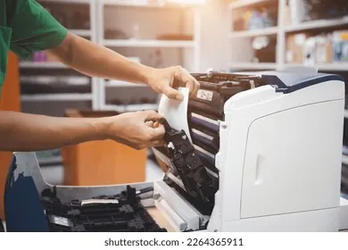
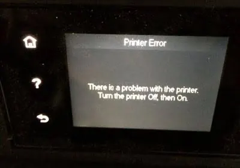

Printers
7 Signs Your Printer Needs Professional Repair
Learn seven warning signs that indicate your printer may need professional repair, from recurring paper jams and poor print quality to unusual noises and persistent errors.
Introduction
Printers can often be a forgotten piece of kit. They may be used daily to print out invoices, assignments, reports, labels or important forms. However, this means that when something goes wrong it can cause disruptions to your workflow in your home or office. Common problems could be caused by a lack of paper in the tray or incorrect loading of a piece of paper. Other issues can be caused by wear and tear, electrical problems or damage requiring a trained technician to fix.
It is important to know when to stop trying to fix the printer. By continually trying to print you can cause further damage to the mechanics, waste on ink/toner and cause damage to internal paper feeding components. The following 7 signs could indicate that you should organise for a professional to take a look. The actual fixing process will depend on the brand, model, age and technology however you should always follow the user manual for your printer.

1. Paper jams
Occasionally you may get paper jammed but if they regularly occur it could be due to curled paper, too much paper in the tray, incorrect guide alignment or incorrect media. If you have regular paper jams (especially in the same place) then it could be due to worn paper feed rollers, dirty rollers, loss of grip in the separation pads, incorrect detection of paper in the sensors or paper fragments inside.
Turn the printer off if suggested in the instructions. Gently pull out the paper following the instructions in the manual. Open any covers that are meant to be opened. Never force paper out if it gets stuck. Don’t use any sharp objects. Paper can get torn and cause problems with the sensors and rollers.
If the printer still jams with correctly loaded paper then have a professional take a look. They will be able to look at the paper feed, rollers, sensors and paper path to see if cleaning or replacement is required.
2. Poor Quality Prints
Poor quality prints can cause issues with readability of documents and may not be suitable for customers. This could be due to faded print, lines, spots, smudging, missing colours or inconsistent printing. The issue could be due to blockages in the nozzles, incorrect alignment, low ink or a damaged printhead in an inkjet printer. Or the issue could be due to a faulty toner cartridge, drum, transfer unit, fuser or other imaging components in a laser printer.
First check that there is enough ink/toner and the correct paper type selected. Use the built in nozzle clean, alignment or calibration tool. Follow the manufacturers instructions. Don’t run multiple cleaning cycles as this can cause you to waste ink.
If the issue persists, appears the same on every page or gets worse then have a look at the imaging and paper feed areas with a technician. Save a sample print to show the issue.
3. Strange noises
Printers can often make noises when feeding paper, moving the printhead and using internal components. However if you start getting new noises such as grinding, clicking, knocking or rattling then you should take note. Especially if it is making a slow noise, causing jams or error messages
This could be due to an object in the printer, faulty gears, worn rollers, misalignment or not moving smoothly. If the printer is making loud noises turn it off. Don’t keep printing to see if the noise stops. This could cause further damage.
Don’t open any sealed or technical bits unless the user manual explicitly says they can be opened. Have a technician look at the internal components. Let them know if it is making noise when powering up, feeding paper, printing or powering down.
4. Error messages
Sometimes you may get error messages but these should disappear after restarting. If you are regularly getting error messages then this could be an indication of an issue. Error messages can appear due to paper feed issues, cartridge recognition, printhead issues, fuser temperatures, internal memory issues, cover sensors or connectivity issues.
Write down the exact message/code. Turn the printer off. Check the manual or official support page for your model. Ensure all covers are closed, paper trays are in place and any consumables are properly fitted. Don’t keep resetting the printer or changing any settings in the service menu. Only follow the instructions for your model.
If the error persists after following the above steps then contact a qualified service. Having the error code and knowing when it happens can help the technician locate the issue. Don’t ignore the error if it keeps appearing.

5. Powering off, overheating or strange smells
If your printer powers off unexpectedly, overheats or has an electrical or burning smell then this should be taken seriously. This could be due to a faulty power cable, adapter or power supply. If you can smell burning turn the printer off immediately. Don’t keep printing.
If it is safe to do so turn the printer off using the power button. Unplug from the socket. Don’t touch any wires, open up the power supply or try to fix any electrical issues. Keep the printer away from stacks of paper and other flammable items. Contact a qualified person. If there is smoke or a fire follow local emergency procedures.
Have a technician look at the power and internal components. Don’t plug back in if there have been signs of electrical damage.
6. Disconnection issues
If your printer keeps disconnecting from your computer/network then this could be due to an issue with the software, cable, wireless connection or hardware. Ensure the printer is ready, the correct device is selected and see if other computers have the same issue. If using a USB printer check the cable and try a known working port. If using a wireless printer ensure it is connected to the correct network.
If the issue has started since you changed your router, computer or OS then note this. Only update drivers from the official support site. Ensure you use the exact model of your printer. If using in an office don’t change any IP addresses, firewall settings or shared printer settings unless approved by your IT administrator.
If you have tried basic troubleshooting and it isn’t helping then contact a professional. They can look at the networking components, control board, drivers and settings. This can be useful if multiple people are having issues or it is disconnecting even though the network is stable.
7. Regular repairs or consumables
If you are regularly having to replace parts, wasting ink/toner or getting regular service errors then it could be that your printer is reaching the end of its economical life. This could be due to a worn maintenance unit, damaged printhead, worn rollers or a combination of aged components.
Keep track of how many times you have had it repaired, how much printing you have done, how much you spend on consumables and how much downtime you have. Get a diagnosis from a technician and ask for a written estimate. Compare the estimated cost of repairs to how old the printer is, availability of parts, how much life is left in the printer and cost of a new printer with suitable features. If the printer is otherwise in good condition and the part is reasonably priced then it may be worth repairing. If major components are failing or parts are hard to source then it may be better to replace.
Don’t just look at how much the part costs. Think about how likely it is that another issue will occur soon and whether the printer will still suit your workload.
What to do before booking repairs
Note down the brand, full model number, serial number (if possible), error code, what the issue is and when it started. Is it happening every time you print? What have you tried to fix the issue? Save a sample of the faulty print. Has anything recently changed with the paper, cartridges, drivers or network?
Ask if they support the exact model, what the diagnostics cost, are parts available and what the warranty is. Ask for permission to do any extra work or fitting of parts. If it is a business printer follow company processes for network access and confidential documents.
Conclusion
If you are regularly having jams, poor print quality, strange noises, error messages, electrical warnings, disconnection issues or regular repairs then you may want to have your printer serviced by a professional. Some issues can be fixed with simple troubleshooting but regular issues often require a proper diagnosis.
If you can smell burning, smoke, sparking or overheating then stop using the printer. If there are any other regular issues then write down what the issue is and get it checked. Taking your time to decide whether to repair can help you get your printer working reliably again or know when it would be best to replace.
Need a hand with your printer or laptop?
Printerworld sells printers, laptops and genuine supplies, and repairs and services both. Bring in your model number and we will help you get it right.